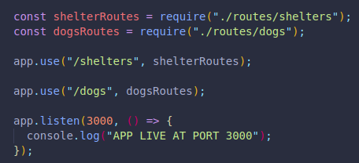
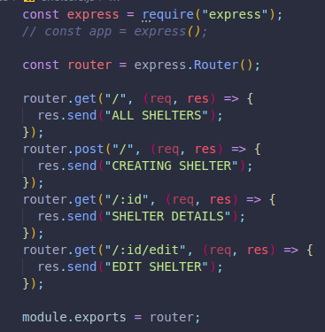
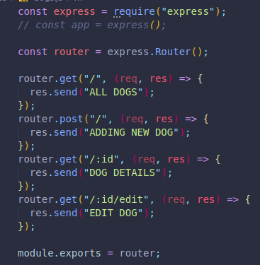
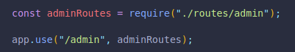
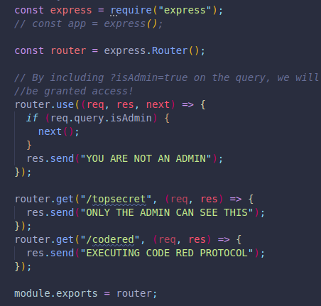

Express comes with a different structure to organize our paths.
In a larger app with many more routes, we may not want to have all paths in a single file.
A Router object is a mini application we can combine with other routers to set our app.
In an animal shelter app, there may be a file for:
There may be another one for dogs with similar examples.
There are more complex apps where we must be sure not to confuse our paths.
We must require our route files and save them into a variable first. Those route files will be where we include all of our paths for each prefix.
The first argument will be the prefix we want as a default for all the paths in the routes file.
The path prefix we include here will not be needed in our shelter routes!
By leaving it empty, (Just /), we MUST include it on every single path in the paths file.
(If we were to include it on both parts, we would need to use /shelters/shelters followed by any additional path. )
Now, in the actual routes files, we must use and execute the Router() method by saving it into a variable.
We can now set all the paths we want, they will all start with the same prefix, which is based on what we call it on our index file, where we listen for our express server.
We must also export each routes file, since we have already required it on our index.
 We can also have middleware that will ONLY run on the paths that are in the same local document!
Here we have an example for some admin websites, which should only be accessible by someone with admin credentials.
By declaring our code in the route that we specifically want to target, we make sure that the code only runs on the local paths.
If we were to include it in our index, it would run for every path, not just the admin ones.
